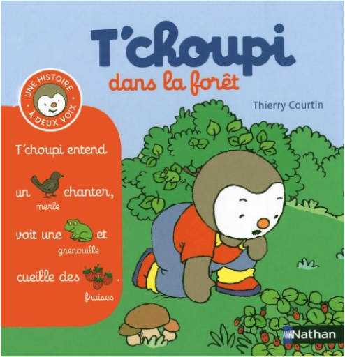

Books
Movies
Albums
Videogames
Games
BD
BD Camille
Blu-ray
Business
Camille
Comics
Cooking
Lego
Manga
Pauline
Photography
Star Wars
Travel
TV Shows
Un livre dont vous êtes le héro
Vinyl
Walt Disney
12
13
14
15
16
le régulateur, tome 1 : ambrosia
corbeyran, marc moreno
4
sherlock holmes & le necronomicon, tome 1
cordurié, laci
sherlock holmes & le necronomicon, tome 2
cordurié, laci
sherlock holmes & les vampires de londres, tome 1
cordurié, laci
sherlock holmes & les vampires de londres, tome 2
cordurié, laci
bien-être & jogging
serge cottereau
t'choupi, à deux voix, tome 1 : dans le jardin
thierry courtin

t'choupi, à deux voix, tome 2 : dans la forêt
thierry courtin
t'choupi, à deux voix, tome 3 : à la plage
thierry courtin
t'choupi, à deux voix, tome 4 : à la ferme
thierry courtin
t'choupi, à deux voix, tome 5 : au zoo
thierry courtin
t'choupi, à deux voix, tome 6 : dans le nuit
thierry courtin
12
13
14
15
16


 Made with Delicious Library Made with Delicious Library
Made with Delicious Library Made with Delicious Library